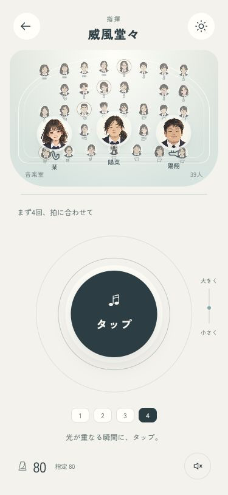
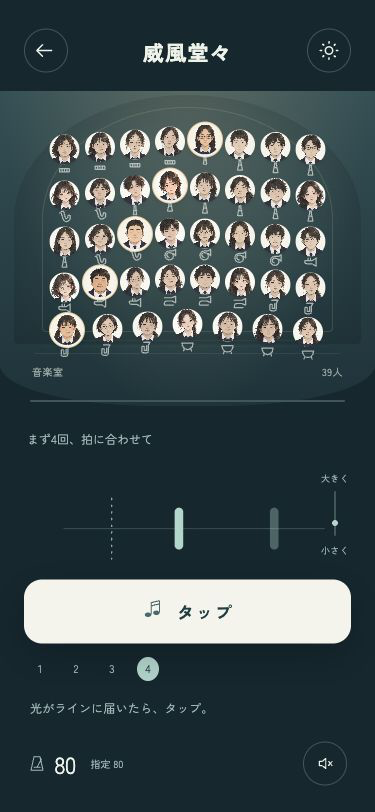
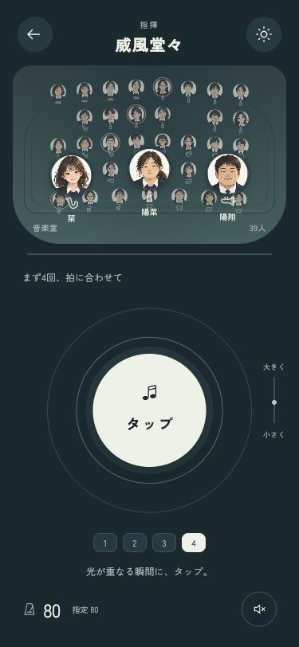
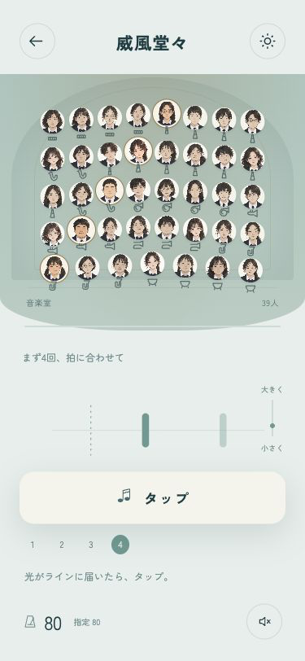

部員と、同じ拍を。
舞台の見せ方とタップの形から作り直しました。ゲームへは未反映です。モックでは光の予告とタップ反応を試せます。
A · 真ん中でタップ
部員を手前に、操作は大きなボタンひとつへ。光の輪が近づくので、押す場所とタイミングに集中できます。

B · 舞台の中へ
39人の舞台を広く見せ、横から来る光で拍を予告。下の大きなタップで、演奏に入り込む方向です。

もう片方のテーマも見る


舞台の見せ方とタップの形から作り直しました。ゲームへは未反映です。モックでは光の予告とタップ反応を試せます。
部員を手前に、操作は大きなボタンひとつへ。光の輪が近づくので、押す場所とタイミングに集中できます。

39人の舞台を広く見せ、横から来る光で拍を予告。下の大きなタップで、演奏に入り込む方向です。


